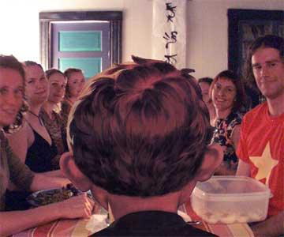

|

My dinner with George
A chance encounter involving protests, Gestapo tactics, mayhem and fine dining in a small Southern Oregon town.
- - - - - - - - - -
by Micaela
 EORGE W. BUSH CAME TO OREGON'S ROGUE VALLEY, Thursday the 14th of October, to give a speech at the Fairgrounds in Medford. The word was out that he and his entourage had decided to spend the night in our little town of Jacksonville, population 2,235, following his speech. For those of us in the know, we also knew he would be staying in cottage #12 of the Jacksonville Inn. That day, I was returning to Jacksonville from Eugene where I had been teaching. On my drive home listening to music I got the idea how fun it would be to have a sing-a-long in town for the President during his night's stay in Jacksonville. I amused myself with the image of a group of us gathering and singing "What the World Needs Now, Is Love Sweet Love", John Lennon's "All We are Saying is Give Peace a Chance" and of course, for the sake of irony, we would want to include Cat Steven's "Peace Train". I even called some friends on my cell phone sharing my idea of having a peace sing-in and closing it with a sit-in peace meditation near to where the President was staying in town. EORGE W. BUSH CAME TO OREGON'S ROGUE VALLEY, Thursday the 14th of October, to give a speech at the Fairgrounds in Medford. The word was out that he and his entourage had decided to spend the night in our little town of Jacksonville, population 2,235, following his speech. For those of us in the know, we also knew he would be staying in cottage #12 of the Jacksonville Inn. That day, I was returning to Jacksonville from Eugene where I had been teaching. On my drive home listening to music I got the idea how fun it would be to have a sing-a-long in town for the President during his night's stay in Jacksonville. I amused myself with the image of a group of us gathering and singing "What the World Needs Now, Is Love Sweet Love", John Lennon's "All We are Saying is Give Peace a Chance" and of course, for the sake of irony, we would want to include Cat Steven's "Peace Train". I even called some friends on my cell phone sharing my idea of having a peace sing-in and closing it with a sit-in peace meditation near to where the President was staying in town.
When I arrived to Jacksonville the roads were so blocked off for the President's upcoming motorcade that I was unable to get home. I parked my car across the street from the parking lot of the Jacksonville Inn and called Phil. He said to meet him at Doc Griffin Park where the Kerry supporters were holding a demonstration. I managed to join up with this group as it marched onto the main street of Jacksonville right as the President's motorcade was driving by. Everyone waved their Kerry signs at the limos and the following security vehicles.
It was obvious that it would be awhile before my car would be going anywhere so Phil and I joined up with our friends Bob and Danielle (my C Street Station partner) to go have dinner at the Jacksonville Inn. We were seated in the patio and at the time we were seated the restaurant patio was quiet as a tomb. Our dining experience started out fairly normal but then suddenly the whole atmosphere of the place began to change. Jerry, the owner, came walking by looking at our table seeming upset that we were sitting there. He had the appearance of the rabbit in Alice in Wonderland walking up to our table, looking almost through us and muttering, "Oh no, damn't". We had thought that perhaps we had occupied the favored table of a preferred customer. Our server had started out very attentive and then seemed to disappear altogether. Next a helicopter hovered over the patio we were sitting in and shone a spotlight scanning all of us. To further the Alice in Wonderland experience we now had, a small in stature woman dressed in black continually walked by our table on a walkie-talkie discussing logistics of something that appeared very important. We were to find out later she was a White House aid.
We are now ready to enter the tea party segment of the Alice in Wonderland odyssey. Platon, a dear friend who works at the Inn, came up to our table saying you guys have to see what is going on out in front. We asked that he just tell us and he said no go look for yourselves. Well, Danielle and I got up to take a look and were both pretty taken back that the group that was on the street when we had walked over to the Inn for dinner appeared to have grown substantially and were walking back and forth on the sidewalk in front of the Inn chanting loudly. On our way back to our table the little lady in black walked by us saying "tell them to come in from the back to avoid the demonstrators". At this point Danielle was strongly suspicious that the President would be joining us for dinner. I explained to her that Platon had told me that George and Laura always eat in their room.
Sitting back down at the table Danielle said maybe we should all think about what we would say to George if we had a chance to talk to him. I had already had this thought when I was driving home from Eugene which is why I had had the vision of a group singing and meditating for peace within his earshot. Danielle said rather than the war, she was more concerned about the damage he is doing to our environment but didn't think there was anything you could say that would reach him. So she decided she would say "may best man win". Almost immediately following this discussion at our table four very large men in suits came walking into the patio followed by Laura Bush. At this point things seemed so surreal. I barely had digested these visual images before George W. himself walked up to me, put out his hand and said "Hi how are you all doin' tonight?"!!!!!
The four of us remained seated, intentionally not rising from our chairs, but did shake his hand. When I shook his hand I was still stunned so I remained mum, Phil said quietly "peace" as he shook his hand, as Danielle shook his hand she looked right at him and said, "may the best man win". George was quieted by this remark. As he began to leave our table I said, "please stop the war" he replied "I'm trying!!".
The table next to us had a group of strong Bush supporters. They jumped up chanting "four more years, four more years". One woman said "I can't believe this, I just love you". There were just two other tables in the patio that had people seated at them. These people were also Bush supporters. However, the interesting thing to me still is our table was the one he would return to more than once; lingering around wanting to engage in conversation.
He never went back to the three tables that were clearly Bush supporters.
The group of people at their table included George and Laura, Gordon Smith and his wife and Greg Walden and his wife. So the republican constituency from southern Oregon was represented in full force. It appeared however that George found this group a bit of a bore as he left them a few times to come over and stand by us.
The demonstrators were voicing their discontent and provided a strong background noise to the patio. After the Bush's and friends sat down, we overheard George say to Jerry, the owner, maybe we should leave. Jerry replied saying, "let me see what I can do". When Jerry walked by me I could feel his angst over the idea of the president exiting from his restaurant.
Suddenly George was back at our table aplologizing to us for, "all of this",- pause - "I don't want to disturb your dinners". The pauses between statements from him were long time events for me because I was still feeling like I was in some kind of dream. Usually when I run into celebrities I express gratitude for something they have done. But for the life of me I was scanning my mind to think of anything I felt grateful for to this man and was coming up blank. Finally I said, "thank you for coming here" That was a stretch as I wasn't even sure I was grateful that he had come here. However, I knew that people in town were happy so I could say "thank you" for them.
Later, the four of us at our table discussed how hard we were working to think of something to say to him. Phil pulled through first with a,"where's the next stop?" Bush replied "Iowa". Phil asked "are you still running?", he replied "no I got injured so I am biking now". Bob commented on all the travel must be hard, he paced a bit back and forth saying it is hard.(Oh please not the it's hard work rap again) I said that I hoped when he comes to the valley that he has a chance to notice how beautiful it is here, he said he doesn't because he just gets in the car and comes and goes, that he doesn't have any time for those things because he is the president. I sat there thinking how I would love to relieve him of that assignment but I didn't say that. I also knew Danielle was thinking that and was relieved when she didn't say it either.
So, finally Bush went back to his table for a moment, then listening to the crowd out front jumped up again and walked up to our table behind Danielle this time facing me. He looked our way and "I think we should go". Then Danielle and I did something we often did when we had C Street, in unison we stated "no, you're better off here". George was quite taken back by the stereo comeback from the two of us. He just looked at us and listening to the noise I said to him "if the noise is bothering you just go inside and you won't hear it".
Danielle said "no you're better off out here". Then he looked at me and said, "I am not worried about me, the noise doesn't bother me! I am worried about YOU! I don't want to disturb your dinner!!" I looked at him and smiled, put my arms up and said, "hey, I'm okay!"
He then queried again, "then, I should stay?" and amazingly enough Drosdick and I did it again and replied in unison, "Yeah, go sit down!"... and he did.
Danielle eventually went over to get his autograph for her daughter Sasha who goes to school in Bush country, and Bob went to get an autograph for his son Nick.
As we all got up to leave the restaurant we noticed that George was still watching all of us. He gave us all a friendly wave goodbye with a thumbs up gester. Who writes these scripts anyway?!!
The highlight of my night came when we left the restaurant and joined the young demonstrators. They were getting very agitated and rude at the sight of the riot police that had been called in to move them to a more convenient location. I explained to them that if you want peace you need to demonstrate it. They claimed that the riot police weren't peaceful and I said "ah, but they are not demonstrating for peace" They said well how do you have peace now? ( meaning with the riot police getting ready to dissend upon us) and I said "You sing". So, I got to lead a whole new generation in song directing their voices towards the fence that George and Laura were sitting behind. We managed to get in a few rounds of "All we are saying, is give peace a chance" for the Bush's before being moved on down the road by the riot police. Makes one feel young again I must say.
Phil and I spent an hour and a half on the street after dinner that night. His car had been towed, mine was buried behind a pile of secret service vans and all we could do was watch and be a part of the activity going on in front of the Inn. It was an entirely different scene than what was happening on the patio we left. The riot police are like the startroopers in the Star War trilogy films, all uniform no one home. It was sad because there were many families there with young kids that just wanted to be in the town that the president was staying in. Some were pepper sprayed and some were hit with rubber bullits.
I came home exhausted and just wanted to flip channels on T.V. Phil got on the phone and called all his kids. While I was flipping channels I saw Will Ferrel playing Bush in a skit on SNL, his imitation is better than you can imagine. Then I went on to watch a show on Frontline giving the political history of our candidates. What a difference between these two men.......... and people are confused about who to vote for?!!!!!! George in person is your good ol' fraternity Joe kind of guy, the "hey how are you all doin'?" kind of guy. Watching his political history on Frontline one gets to see how he put people in prison on death row to death in Texas without questioning, and that more than anyone in his cabinet, Iraq was his war, his choice.
I wish he wasn't so concerned about disturbing my dinner and more concerned about the lives of people. I wish I had said that. But at least I asked for him to"please stop the war" and sang for him a peace song that moves me deeply. I also will continue to put him in my daily meditation in hope that he and I both will be lifted to make choices from a place of peace.
So, here's a question for all of you, what would you ask for if he joined you for dinner?

|